Игра в «че»
- Че читаем?
- Ну че, по главе?
- Че-лендж: книга за месяц.
- Читаем, че.
Потому что Эрнесто Гевара читал всю жизнь. Это факт из архивов и биографий, а не легенда.
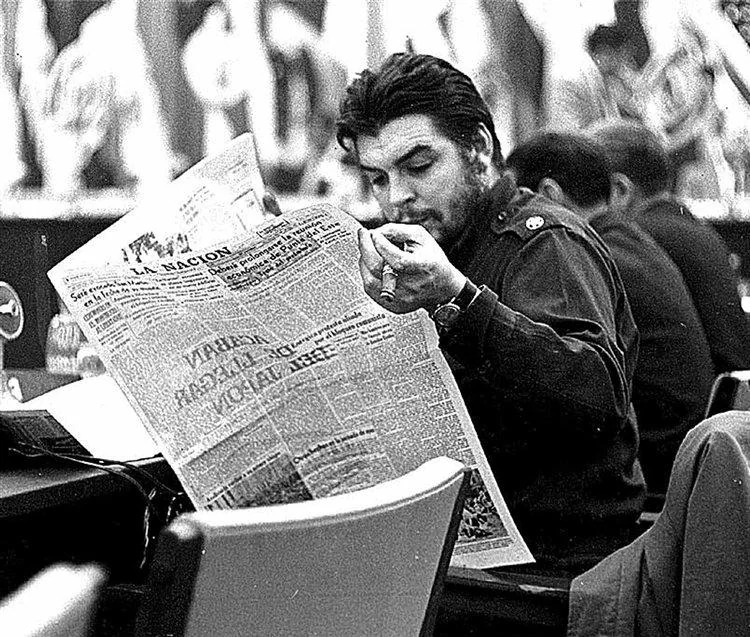
Из-за астмы мама учила его читать дома, а брат вспоминал, что он запирался в ванной, чтобы читать часами. El País, 2017
С 17 лет он вёл свой «Философский словарь» и записывал каждую прочитанную книгу в тетради по алфавиту. Р. Пиглья
В горах Кубы, в джунглях Конго и Боливии составлял списки чтения по месяцам. В Боливии за 11 месяцев записал 60 книг, от Стендаля и Достоевского до Кортасара. журнал Fuentes, 2010
В его рюкзаке нашли «Зелёную тетрадь»: стихи Неруды, Вальехо, Гильена и Леона Фелипе, переписанные от руки, чтобы не таскать с собой целую библиотеку. La Jornada, 2007
Он встречался с Сартром, Бовуар и Нерудой, а своих замминистров учил сам: по понедельникам в 7 утра, линейное программирование и домашние задания. Т. Саэнс, замминистра
Нам в нём нравится ровно это: человек действия, который всё время учился. Наша формула та же: читаем, чтобы действовать.
А ещё «Че» по-русски работает само. «Че читаем?» звучит смешно, по-дружески и без политики. Политику оставляем на полке, берём книги, берет и чувство юмора.
И когда клуб бросает вызов, у нас один ответ.
¡Desafío aceptado! Вызов принят.
Для плакатов, мерча, рассылок и подсказок Че в приложении. Список по выбору Маши от 8 октября.
Плакаты, которые выбрала Маша 8 октября. П1 «Читай как Чегевара» основной, на лаймовом фоне; шутки в его раскладке на красном, жёлтом и фиолетовом. Банк клуба в виде карты: П5в. В стиле Уорхола: П3, П26, П27, П28. «Вызов принят» (П17-П19) для структуры.
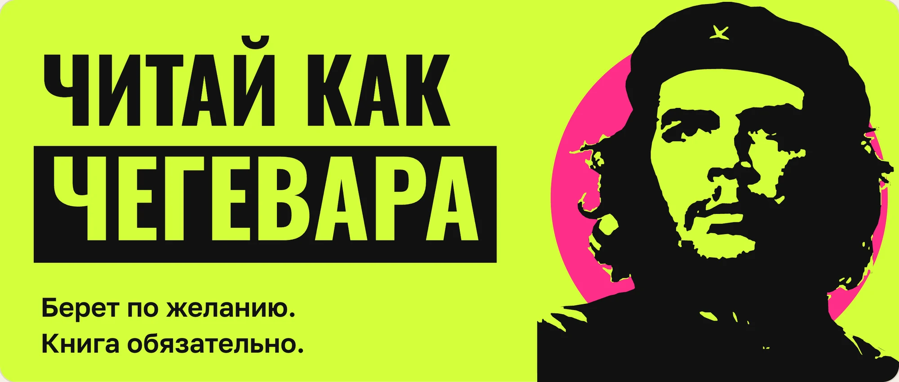
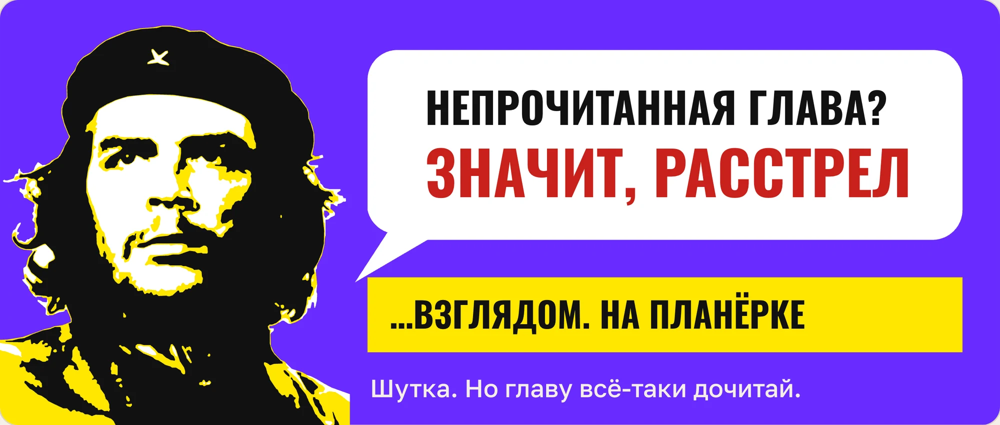
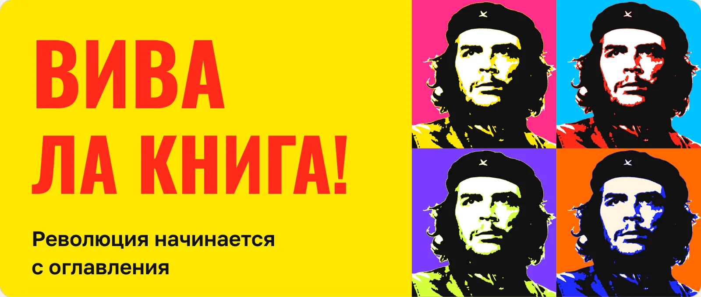
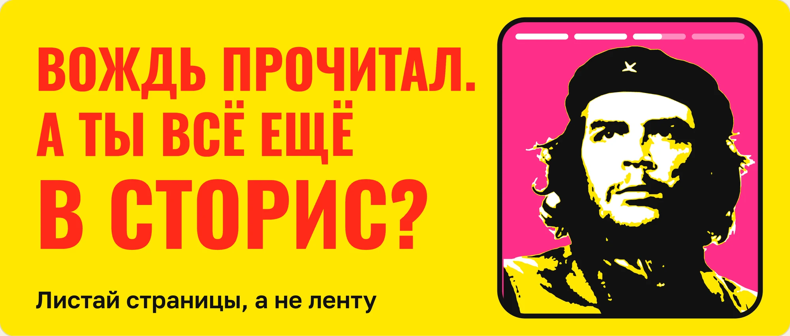
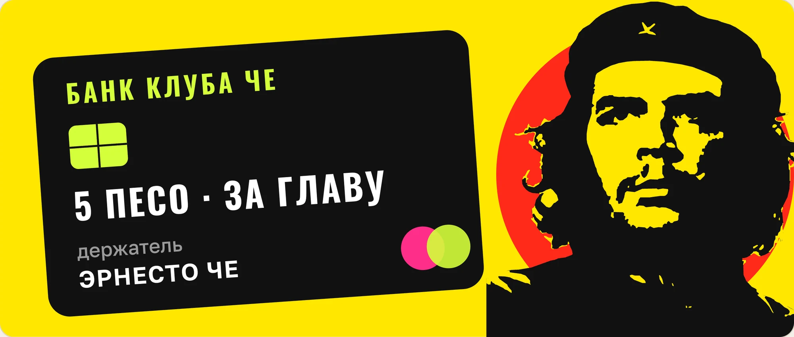
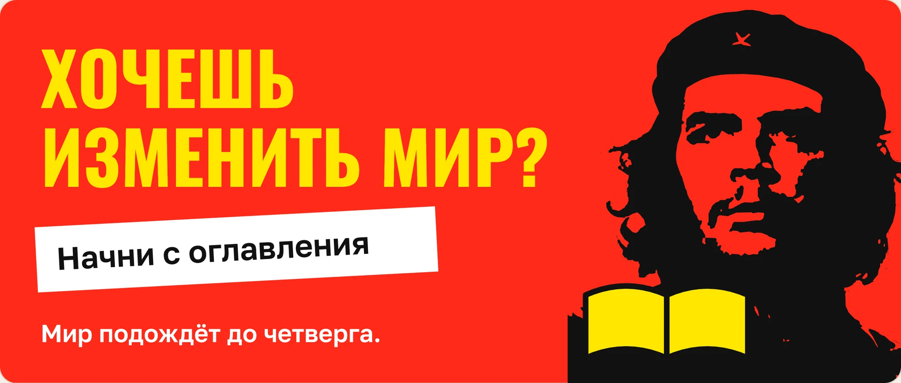
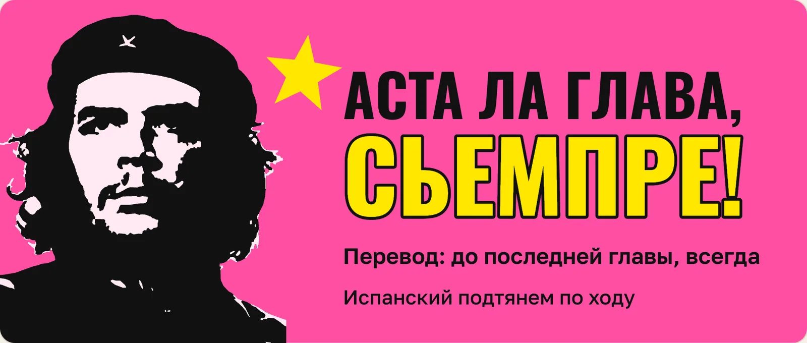
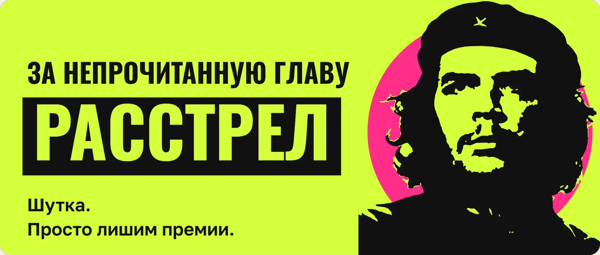
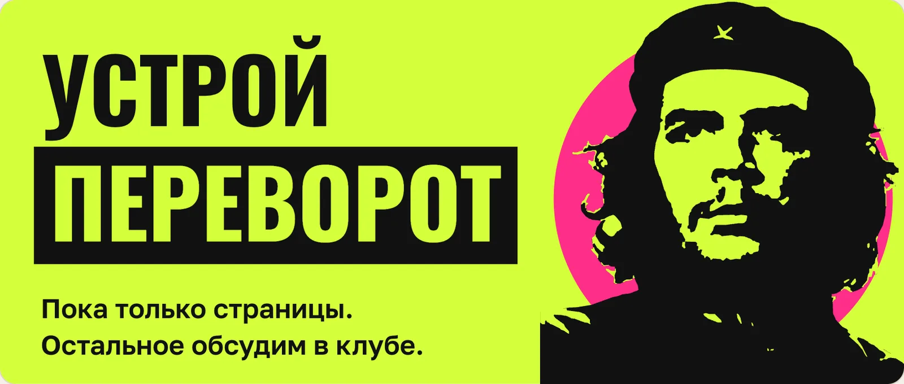
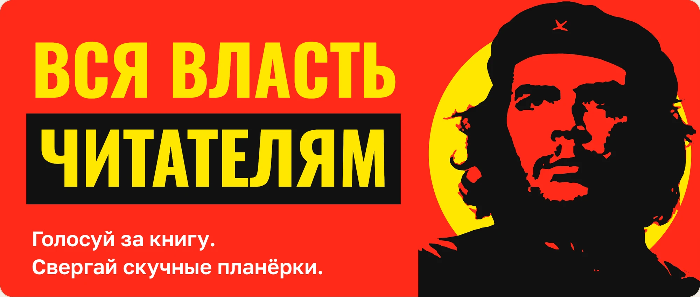
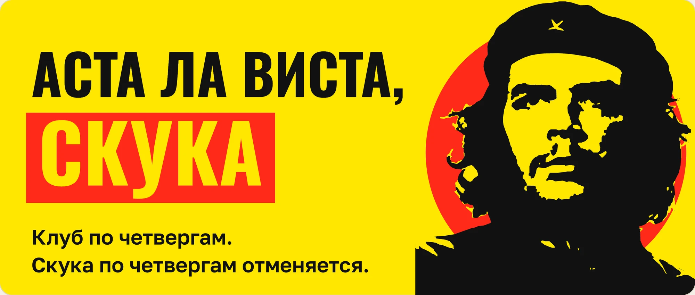
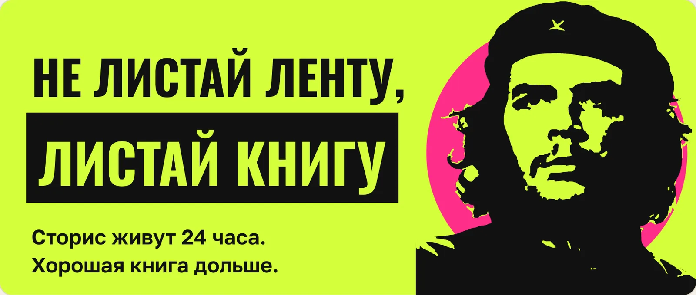
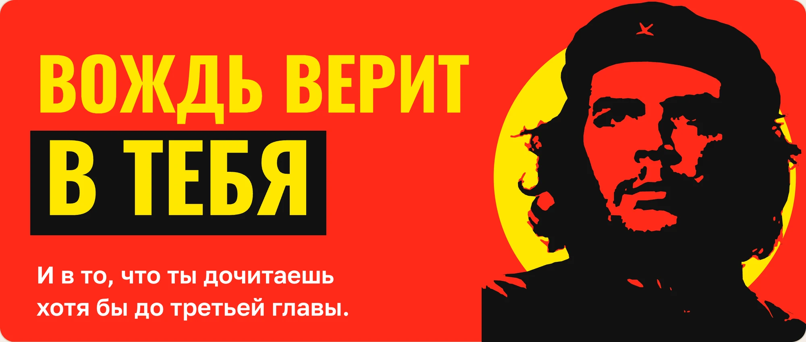
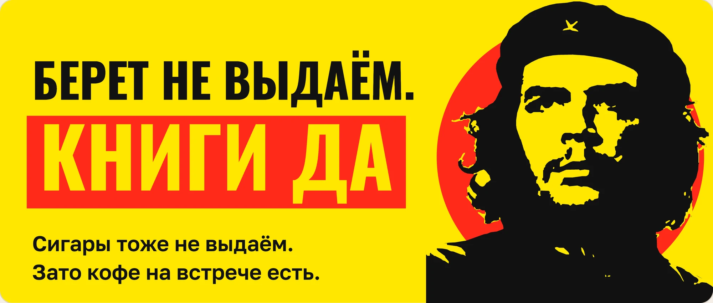
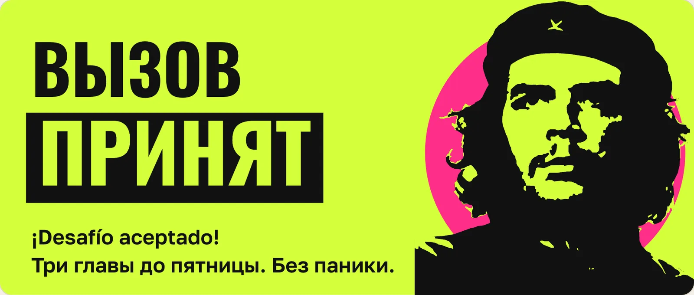
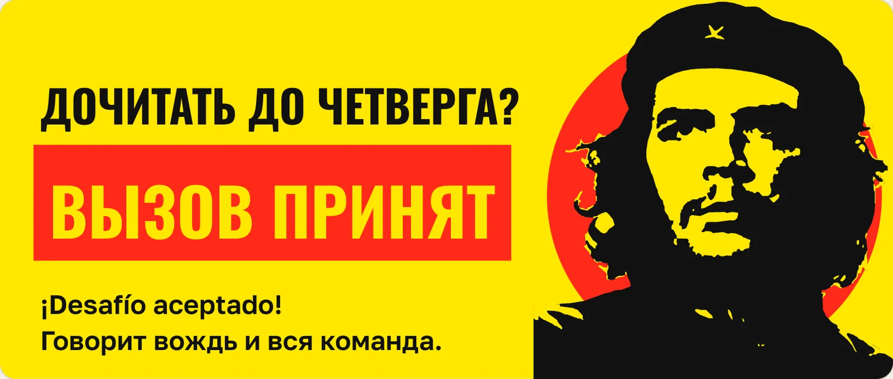
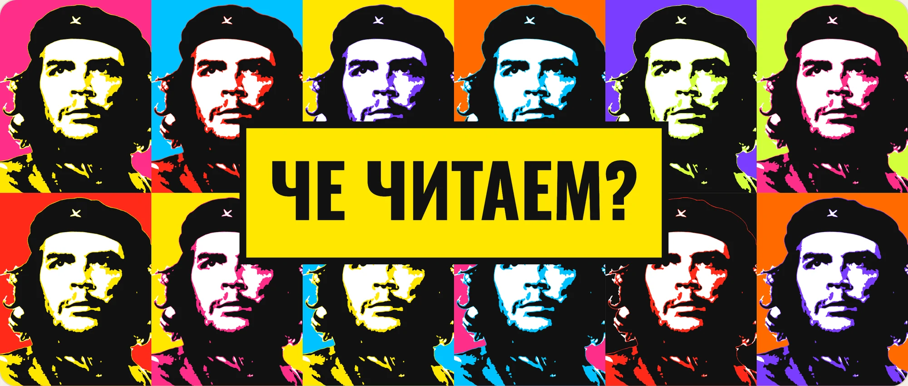
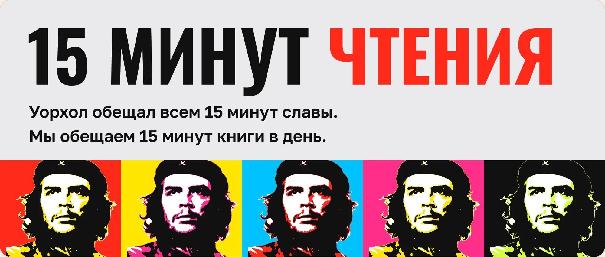
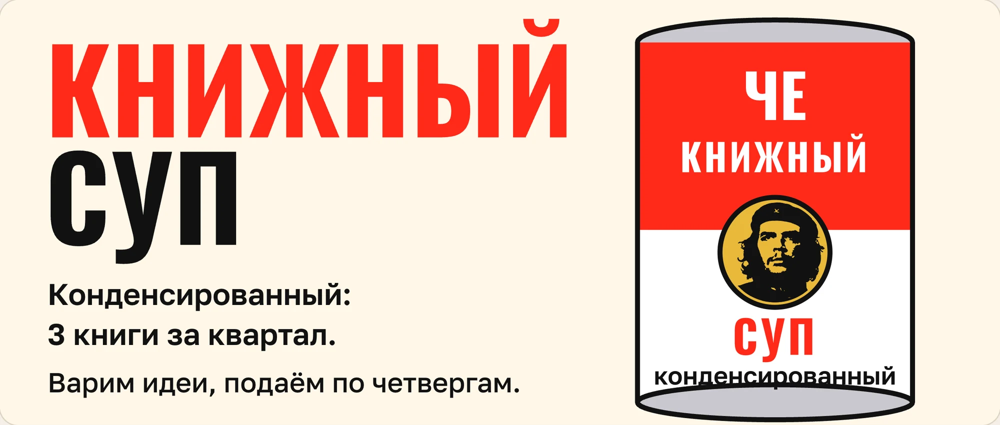
Как скрепка в Word, только с беретом. Он подсказывает по каждому экрану, здоровается при первом входе и рассказывает о себе в разделе «Обо мне», каждый факт со ссылкой на источник.
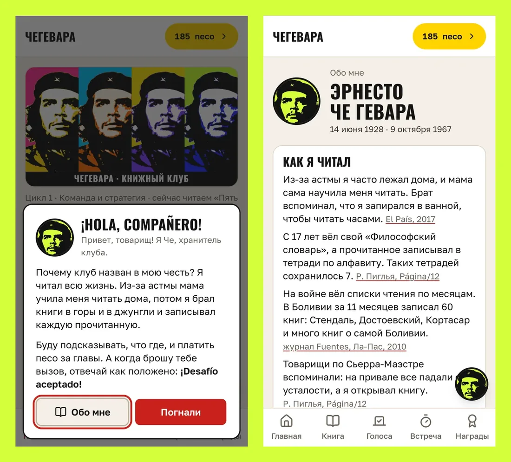